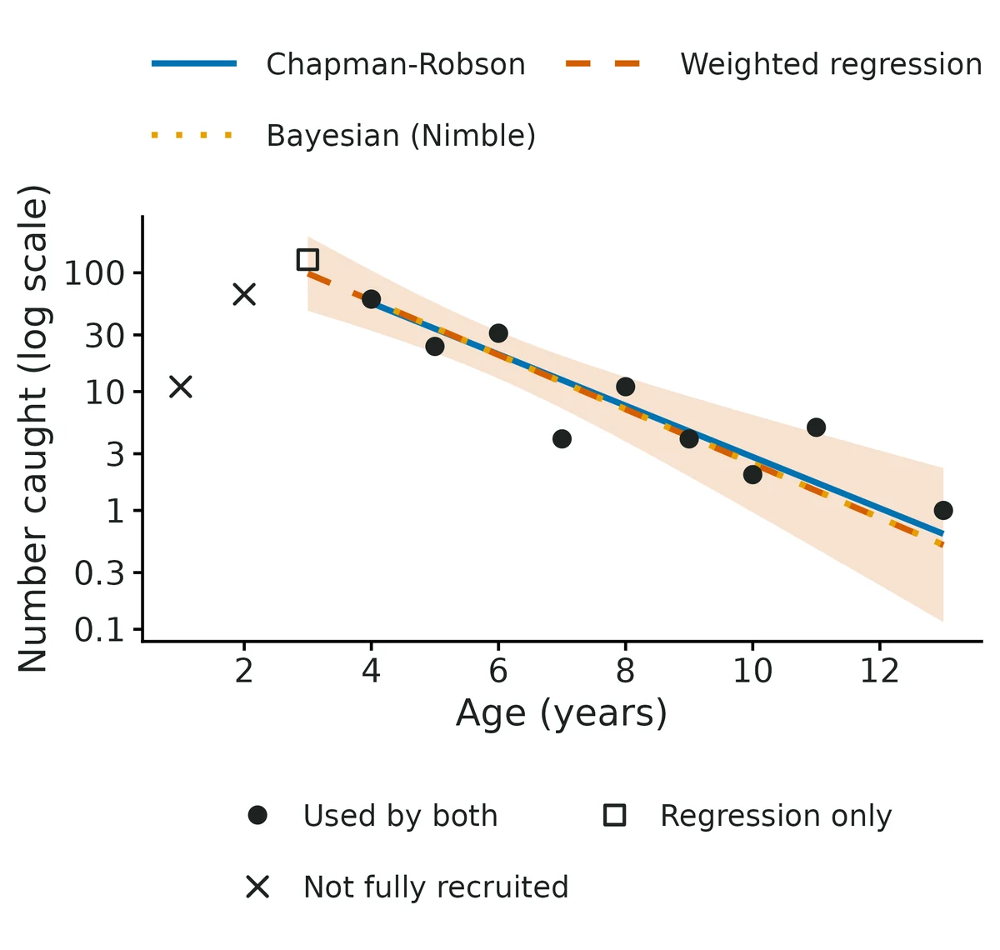
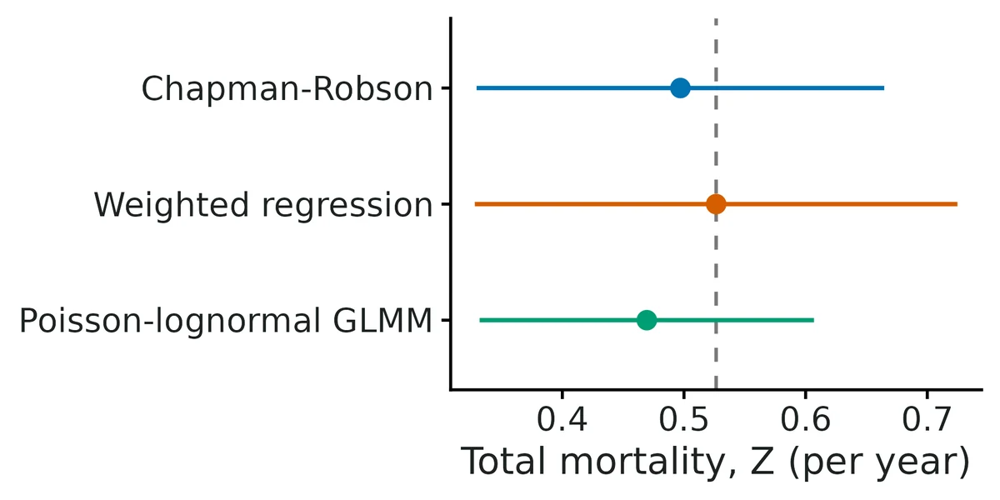
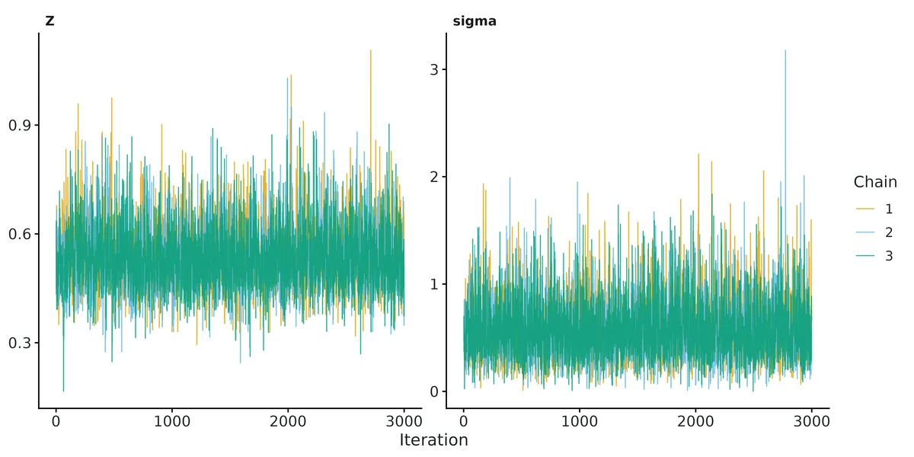

Fish stock assessment - catch curves, stock-recruitment and surplus production
Fisheries questions about mortality, recruitment or stock status. (1) catch_curve - aged fish from a survey or fishery sample (one year or several years); question is total mortality Z / annual survival of fully recruited fish. (2) stock_recruit - a brood table of spawners and the recruits they produced; question is productivity, density dependence, S_MSY, U_MSY, steepness. (3) surplus_production - an annual catch series plus an abundance index (CPUE or survey); question is MSY, B/B_MSY, F/F_MSY (Kobe status).
Is this the right analysis?
Use it when
Fisheries questions about mortality, recruitment or stock status. (1) catch_curve - aged fish from a survey or fishery sample (one year or several years); question is total mortality Z / annual survival of fully recruited fish. (2) stock_recruit - a brood table of spawners and the recruits they produced; question is productivity, density dependence, S_MSY, U_MSY, steepness. (3) surplus_production - an annual catch series plus an abundance index (CPUE or survey); question is MSY, B/B_MSY, F/F_MSY (Kobe status).
Not for
Length-only data (convert to age with an age-length key first, or use a length-based method), separating fishing from natural mortality (needs an M estimate or tagging), growth curves (use fisheries-growth), age-structured assessment (stock synthesis, SAM), catch-only methods without an index, stocks whose index is not proportional to biomass (hyperstability), recruitment series with errors-in-spawners problems, one-way-trip catch/CPUE histories for production models (weakly identified, see Known limits).
The data you need
Catch_curve - one row per aged fish (age) or a catch-at-age table (age, count); optionally a year column for age samples from several years (multi-year cohort catch curve). stock_recruit - brood year, spawners, recruits. surplus_production - year, catch (every year), abundance index (may have gaps)..
What the example's main data file looks like:
| fish_id | sample_date | basin | gear | total_length_mm | age |
|---|---|---|---|---|---|
| WAE25-0001 | 2025-09-22 | South Basin | experimental gill net | 426 | 2 |
| WAE25-0002 | 2025-09-22 | South Basin | experimental gill net | 546 | 6 |
| WAE25-0003 | 2025-09-22 | North Basin | experimental gill net | 431 | 3 |
| WAE25-0004 | 2025-09-22 | North Basin | experimental gill net | 396 | 2 |
| WAE25-0005 | 2025-09-22 | South Basin | experimental gill net | 461 | 4 |
Not sure? Use the finder to compare modules.
The worked example
Walleye catch curve: total annual mortality from fall gill-net ages (simulated)
The question: What is the total annual mortality (and survival) of adult walleye in the lake?
The data are simulated, so the true answer is known and the analysis can be checked against it.
What the researcher typed
Here are otolith ages from our fall walleye gill-net survey (walleye_fall_gillnet_ages.csv). I want to know the total annual mortality and survival of adult walleye. Please do the analysis and give me a report with figures I can use.
Run it yourself
Download the example data below and unzip it.
Open the unzipped folder in Claude Code (see Install).
Paste the prompt above. The agent checks the files, writes a plan, runs planted truth, fits the model and writes the report. You can compare your results with the ones below.
Contains walleye_fall_gillnet_ages.csv, the settings file (config.yaml), a description of the data and a step-by-step walkthrough.
Study design details
| model | catch_curve |
|---|---|
| n fish sampled | 350 |
| n fish aged | 348 |
| ages observed | 1-13 |
| max age | 20 |
| basins | 2 |
| gear | experimental gill net |
Results from the example data

What this means
- Total instantaneous mortality of fully recruited walleye (ages 4 and older) is Z = 0.53 per year (95% credible interval 0.39 to 0.74; Bayesian Poisson-lognormal catch curve).
- Equivalently, about 59% (48% to 68%) of fully recruited fish survive each year and 41% (32% to 52%) die from all causes combined (fishing plus natural mortality).
- For comparison, the other estimators give Z = 0.50 (0.33 to 0.66; Chapman-Robson); Z = 0.53 (0.33 to 0.72; weighted regression); Z = 0.50 (0.35 to 0.66; Poisson-lognormal GLMM).
- The intervals of Chapman-Robson, weighted regression and Poisson-lognormal GLMM were too narrow (below the 95% coverage limit) in some of this module's simulations with variable year classes (VALIDATION.md), so they are shown only as a cross-check of the estimate.
- All estimators agree within their uncertainty.
- Real fish populations have strong and weak year classes, so the counts at age scatter around the straight line.
- Here the scatter is much larger than what constant recruitment would give (Chapman-Robson c-hat = 2.97); the estimated year-class SD is 0.54 on the log scale, i.e. a typical year class is about 72% stronger or 42% weaker than average.
- The Bayesian Poisson-lognormal catch curve treats each year class as a random draw and carries that variability into its interval; in this module's simulations with variable year classes its 95% intervals covered the true Z in 95-98% of samples, as they should.
- A catch curve assumes no trend in recruitment over the year classes sampled, constant mortality over the ages used and full, equal vulnerability of every age from the first age used onwards.
- It also assumes the aged fish are a random sample of the population's fully recruited fish.
- If the fish came from a few net sets, hauls or sites that each caught a different mix of ages (cluster sampling), the age composition is noisier than the model allows: in this module's verification with 20 hauls the default Bayesian Z was biased +8% (intra-haul correlation 0.1) to +15% (correlation 0.2, which fails the module's 10% bias limit), the GLMM +2% to +8% and Chapman-Robson -2% to -3%, so with such data treat the Bayesian Z as possibly too high and compare it with the GLMM and Chapman-Robson estimates (Nelson 2019).
- Z mixes fishing and natural mortality; separating them needs an independent estimate of natural mortality M (F = Z - M).
More figures


Figures are the module's default publication figures, reduced for the web. The report also saves them as PDF and full-resolution PNG.
Planted truth at the example's design
Before trusting the example's results, the module was run on many simulated data sets with the same design and known true values. Each row is one quantity: did the method get it back? (What the thresholds are.)
Every interpreted estimand (Z, annual survival and annual mortality from the default Bayesian catch curve) passes planted-truth recovery at this design (bias +1.0%, -0.2%, +0.3%; coverage 0.960 vs bound 0.904; 200/200 converged); the real-data fit converged (R-hat 1.001, ESS 2,901); the overdispersion found by the goodness-of-fit check (c-hat 2.97) is the year-class variability the model includes; the likelihood GLMM agrees; negative controls fail as intended. Chapman-Robson (coverage 0.850) and the weighted regression (0.900) still fail coverage and are reported only as cross-checks, not interpreted. Independent verification (VALIDATION.md section 6, own simulator, 4 single-year designs at Z 0.4/0.9 with 200/600 fish) confirmed the Bayesian default passes when aged fish are a simple random sample (bias +1.6% to +5.3%, coverage 0.953-0.983). The example data were simulated that way; real gill-net ages come from net sets, and with cluster sampling (20 hauls, intra-haul correlation 0.2) the Bayesian Z was biased +15% (fails), so for real data compare the Bayesian, GLMM and Chapman-Robson estimates.
| This example | catch curve from 348 aged walleye in one year, ages 1-13, true Z 0.55, year-class SD 0.4 |
|---|---|
| Design the module was validated at | catch curve from 400 aged fish in one year, true Z 0.5, year-class SD 0.3, logistic selectivity |
The example is slightly harder than the default catch-curve design (348 vs 400 fish, more variable year classes: SD 0.4 vs 0.3). This exact worked-example design was itself tested in validation: the default Bayesian catch curve had bias +1.0% and coverage 0.960, while Chapman-Robson (0.864) and weighted regression (0.886) under-covered. At a harder design (150 fish, Z 0.8) the Bayesian Z was biased +9.9%, and with fish aged from a few hauls it was biased +8% to +15%.
These calls sit close to the pass/fail line. With another 200 simulated data sets they could come out the other way, so read them as “about at the limit” rather than as a clear pass or fail.
- Z_weighted_regression (✗ FAIL): coverage 0.900 against a minimum of 0.904.
5 of 7 rows pass; 1 is borderline.
| Quantity | True value | Average estimate | Bias | Allowed bias | Coverage (needed) | Result |
|---|---|---|---|---|---|---|
| annual_mortality | 0.423 | 0.424 | +0.3% | ±10.0% | 0.96 (0.904) | ✓ PASS |
| annual_survival | 0.577 | 0.576 | -0.2% | ±10.0% | 0.96 (0.904) | ✓ PASS |
| total_mortality_Z | 0.55 | 0.556 | +1.1% | ±10.0% | 0.96 (0.904) | ✓ PASS |
| Z_bayes | 0.55 | 0.556 | +1.1% | ±10.0% | 0.96 (0.904) | ✓ PASS |
| Z_glmm | 0.55 | 0.537 | -2.3% | ±10.0% | 0.93 (0.904) | ✓ PASS |
| Z_chapman_robson | 0.55 | 0.525 | -4.6% | ±10.0% | 0.85 (0.904) | ✗ FAIL |
| Z_weighted_regression | 0.55 | 0.547 | -0.5% | ±10.0% | 0.9 (0.904) | ✗ FAIL ≈ borderline |
Limits that matter
- Chapman-Robson and weighted-regression intervals under-cover when year classes vary (0.850 and 0.900 at this design); they are cross-checks only.
- One age sample averages over the year classes it contains, so the interval is wide (0.39-0.74); several years of ages (multi-year cohort catch curve) narrow it far more than more fish in one year.
- A recruitment trend biases Z for every estimator (negative control +32%); dome-shaped selectivity and under-ageing of old fish also bias Z.
- At harder designs (Z 0.8, 150 fish) the Bayesian Z is biased about +10% (still within the gate).
- Cluster sampling (fish aged from a few net sets or hauls with different age mixes) biases the Bayesian Z upward: +8% (intra-haul correlation 0.1) to +15% (0.2, fails the 10% limit) with 20 hauls; GLMM +2% to +8%, Chapman-Robson -2% to -3% (VALIDATION.md section 6; Nelson 2019).
- Z is total mortality; F = Z - M needs an independent natural-mortality estimate.
- Data are simulated.
How this module was validated
- 200-500 simulated datasets per design for each estimator; the default Bayesian catch curve (Nimble, 3 chains x 10,000 iterations) PASSED at the default, worked-example and hard designs (bias +1.0% to +9.9%, coverage 0.960-0.975).
- Older estimators (Chapman-Robson, weighted regression, original GLMM) under-covered when year classes vary and are kept only as cross-checks; the multi-year cohort catch curve passed at 5 and 10 years.
- Negative controls failed as required: an unmodelled recruitment trend (+32% bias, coverage 0.455) and forcing year-class variability to zero (coverage 0.650).
- Stock-recruitment (Ricker, 30 years) passed all 7 estimands with a false-positive rate of 0.050 for the density-dependence term; surplus production with a contrasting catch history passed all 7, but one-way-trip catch histories failed.
- Cross-checks matched FSA, lme4, a hand-written weighted regression, and JAGS for surplus production (posterior medians within 2.4%).
- Power for stock-recruit density dependence with low spawner contrast: 0.09 at 12 years rising to 0.43 at 40 years.
- Two separate verification passes with independent simulators confirmed the Bayesian catch curve under simple random sampling (bias +1.6% to +5.3%, coverage 0.953-0.983) but found +15% bias with cluster (haul) sampling; verdict: verified with limits.
Every run uses the acceptance gate described on the validation page. The full record follows, section by section, exactly as kept in the module's VALIDATION.md.
Settings and pass/fail rule used for every run
Gate rules (core/R/recovery.R, unchanged): |bias| <= max(10% of truth, 3 MC SE); 95% coverage >= 0.95 - 3 MC SE (floor 0.80); >= 90% of replicates converged.
Overall status: VERIFIED_WITH_LIMITS for stock_recruit (Ricker) and surplus_production with a contrasting catch history. catch_curve: since 2026-10-21 (section 5) the default single-year estimator is a Bayesian Poisson-lognormal catch curve with a year-class random effect; it PASSES the gate (bias and 95% coverage) at the default, worked-example and harder designs and in an independent simulator. The multi-year cohort catch curve (glmmTMB, REML + t) passes at 5 and 10 years. Chapman-Robson and the weighted regression still under-cover (kept as cross-checks). Sections 1-4 are the history before that change. Independent verification (section 6, own simulator, 12 designs): confirmed for simple random sampling of aged fish (single-year Bayes and multi-year cohort GLMM PASS everywhere); with cluster (haul) sampling the single-year Bayesian Z is biased +8% to +15% (FAILS at intra-haul correlation 0.2). Status for catch_curve: VERIFIED_WITH_LIMITS.
All numbers below come from scripts that can be rerun:
- builder runs:
dev/fisheries-stock/recover_all.shwithdev/fisheries-stock/*.yaml(logslogs/fisheries-stock_recover_{fast,mcmc}.log); - verification:
dev/fisheries-stock/verify/(logslogs/fisheries-stock_verify_*.log, resultsresults/fisheries-stock/verify/). Recovery runs usefast_settings(Nimble SR 10k iter, SP 30k iter, 3 chains).
1. Builder's planted-truth recovery
Rows marked (v2) were rerun after the verification change to posterior medians (section 3); other rows did not involve Nimble and are unaffected.
Catch curve (true Z = 0.5, year-class SD 0.3, 400 aged fish, logistic selectivity)
| design | nsim | estimator | rel. bias | coverage | gate |
|---|---|---|---|---|---|
| cc_default | 500 | weighted regression (primary) | +0.1% | 0.900 | FAIL (coverage) |
| cc_default | 500 | Chapman-Robson | -2.4% | 0.916 | FAIL (coverage) |
| cc_default | 500 | GLMM | -4.5% | 0.858 | FAIL (coverage) |
| cc_default, seed 77 | 2000 | weighted regression | -0.3% | 0.915 (bound 0.935) | FAIL (coverage) |
| cc_default, seed 77 | 2000 | Chapman-Robson | -2.4% | 0.914 | FAIL |
| cc_default, seed 77 | 2000 | GLMM | -4.4% | 0.865 | FAIL |
| cc_hard (Z=1, SD 0.6, 100 fish) | 500 | WR / CR / GLMM | -1% / -11% / -19% | 0.895 / 0.899 / 0.765 | FAIL; 45/500 fits returned errors |
| neg. control: CR without c-hat, SD 0.5 | 500 | Chapman-Robson | -5.1% | 0.558 | FAIL (as intended) |
| neg. control: recruitment trend 0.15/yr | 300 | all | +25 to +29% | 0.55-0.69 | FAIL (as intended) |
Stock-recruitment
| design | nsim | result | ||
|---|---|---|---|---|
| sr_default (Ricker LS, 30 yr, sigma 0.4) | 500 | PASS all 7 ( | rel bias | <= 0.9%, coverage 0.950-0.964) |
| sr_bh (Beverton-Holt LS, builder defaults) | 500 | FAIL: beta +35.5% (coverage 0.998), S_eq +11% (cov 0.910), S_MSY +12.7%; ln alpha, U_MSY, steepness, sigma PASS | ||
| sr_hard (15 yr, sigma 0.6) | 500 | ln alpha, beta, U_MSY, sigma, steepness PASS; S_MSY and S_eq undefined (Inf) in reps with beta_hat <= 0, so mean is Inf and recovery_report errors | ||
| sr_fpr (beta = 0) | 500 | rejection rate of beta = 0: 0.050 | ||
| neg. control: LS on AR(1) residuals (phi 0.6) | 500 | coverage 0.76-0.88: FAIL (as intended) | ||
| sr_nimble_ar1 (Nimble AR(1), phi 0.6) (v2) | 100 | PASS all 8 (before v2: recruitment_sd +14.9% FAIL) | ||
| sr_nimble_iid (Nimble AR(1) on iid data) (v2) | 100 | PASS all 8 (before v2: recruitment_sd +10.3% FAIL) | ||
| power for beta, low-contrast spawners | 200/size | power 0.09 (12 yr), 0.19 (16), 0.25 (20), 0.33 (30), 0.43 (40) |
Surplus production (r 0.4, K 1000, q 0.002, sigma_proc 0.05, sigma_obs 0.15, 30 yr)
| design | nsim | converged (R-hat < 1.05) | result |
|---|---|---|---|
| sp_contrast (v2) | 200 | 189/200 = 0.945 | PASS all 7 (r -6.2%, K +8.6%, q -8.5%, MSY +0.6%, B/B_MSY +1.3%, F/F_MSY -0.5%; coverage 0.97-0.98). Before v2 (posterior means): K +12.6% FAIL |
| sp_oneway (v2) | 200 | 152/200 = 0.76 | FAIL: convergence; r -34%, K +44%, q -32% (prior-driven); MSY, B/B_MSY, F/F_MSY, depletion within 10% |
Note: summarise_recovery() computes n_ok from converged replicates only, so the gate's converged_ok column is always TRUE; convergence fractions above were computed by hand from the replicate files (see "Core issue" below).
Cross-checks (dev/fisheries-stock/crosscheck.R, logs/fisheries-stock_crosscheck.log)
- Chapman-Robson Z and raw SE vs FSA::chapmanRobson: identical (max |diff| 0).
- Weighted regression vs hand-written weighted lm: max |diff| 4e-16.
- GLMM Z, glmmTMB vs lme4::glmer: max |diff| 1.3e-4.
- Ricker LS vs Nimble (flat priors): ln alpha within 0.008, U_MSY within 0.01 (5 datasets).
- Surplus production, Nimble vs JAGS running the Meyer & Millar (1999) BUGS model with the same priors: posterior medians within 2.4% for r, K, q, MSY, B/B_MSY, F/F_MSY.
- Beverton-Holt Nimble vs LS disagree strongly (posterior beta 2-4x the LS value under the U(0, beta_max) prior): the Nimble BH engine is NOT validated.
2. Known limits
- Catch curves (updated 2026-10-21, section 5). With lognormal year-class variability, the Chapman-Robson (77-92%) and weighted-regression (84-93%) 95% intervals are too narrow; HC3/HC2 sandwich SEs do not fix it (section 3). The original GLMM (ML, Wald, no zero tail) covered 79-91% and was biased -4% to -12%. The new default Bayesian catch curve covers 0.95-0.98 with bias +1.0% to +4.6% at moderate designs and +9.9% at the hard design (Z 0.8, YC SD 0.5, 150 fish; just inside the 10% bound): its posterior median of Z is pulled up when few ages are informative. The single-year GLMM with REML + t covers 0.89-0.95 (fails the independent simulator), so it is a cross-check, not the default. Wald, profile-likelihood and parametric-bootstrap GLMM intervals all under-cover (0.80-0.92) because they condition on the ML year-class SD, which is biased low (mean 0.18 for a true 0.30). Weighted-regression bias is -12% without year-class variability (zero-catch ages dropped).
- Multi-year cohort catch curve. Passes with 5-10 years of 100-250 fish. Pooled Chapman-Robson / weighted regression on the same data cover only 0.73-0.83.
z_trend: trueis weakly identified: a true trend of +0.03 Z/yr over 10 years was estimated at +0.019 (bias -36%, FAILS bias; coverage 0.942), the false-positive rate with no trend is 0.052, and adding the trend widens the Z interval ~10x. Use it only to ask whether Z has changed. - Cluster sampling (section 6). With aged fish drawn from 20 hauls whose age mixes differ (Dirichlet-multinomial, Nelson 2019), the single-year Bayesian Z was biased +8.2% (intra-haul correlation 0.1, PASS) and +15.3% (0.2, FAILS bias; coverage 0.916). GLMM REML-t +2.1% / +8.0% (PASS), Chapman-Robson -1.9% / -3.0% (PASS). The multi-year cohort GLMM passed (+2.5%, 0.934). The Bayesian posterior median of Z is biased upward in every single-year design (+1% to +15%).
- Catch-curve assumptions. Recruitment trend (negative control: +29% bias; +32% for the Bayesian default), dome-shaped selectivity and ageing error bias Z; Z cannot be split into F and M without an external M.
- Stock-recruitment. LS ignores autocorrelated residuals (negative control fails); use
sr_engine: nimble, ar1: true. Beverton-Holt beta and S_eq/S_MSY are biased (+11 to +35%) when spawners do not reach the flat part of the curve (builder default design); BH passes when the spawner range spans ~0.2-6 x 1/beta (section 3). Closed-loop (spawners from past recruits) data give beta +26% (time-series bias, Walters 1985). Nimble BH is untested. S_MSY/U_MSY assume recruits in spawner units. Steepness posterior is long-tailed (Ricker h can exceed 1). - Surplus production. One-way-trip data: r, K and q are prior-driven (bias -34% to +93%; posterior/prior SD ratio for r 0.87) and ~25% of fits do not reach R-hat < 1.05 at fast settings; the fit flags this. K and q are only borderline identified even with contrast (bias -10% to +9%; q fails at -10.1% in one design); interpret MSY and relative status (B/B_MSY, F/F_MSY), not K. Process SD is prior-dominated (bias +17% at truth 0.05, -42% at truth 0.10, coverage ~1.0) and is a nuisance parameter. Catch assumed known; index assumed proportional to biomass; symmetric Schaefer production.
3. Independent verification (2026-10-19, separate agent)
What was checked. Code read line by line against Chapman & Robson (1960) / Smith et al. (2012) / FSA (S = T/(n+T-1), Hoenig correction, SE (1-e^-Z)/sqrt(n e^-Z), c-hat inflation), Maceina & Bettoli (1998) weighting (FSA::catchCurve), Millar (2015) GLMM, Scheuerell (2016) Lambert-W Ricker S_MSY/U_MSY, Beverton-Holt closed forms, Mace & Doonan steepness (0.2(alpha phi0)^0.8; alpha phi0/(4+alpha phi0)), and Meyer & Millar (1999) state-space Schaefer equations and precision priors (Gamma(3.785518, 0.010223), Gamma(1.708603, 0.008613854)). All correct. The module's simulators and fitters share only sr_mean/sr_refpoints; the truth in my own simulator was computed by numerical optimisation instead, and agrees.
Independent simulator (dev/fisheries-stock/verify/vsim.R, no module code): catch curve from a year-by-year age-structured population (M + F, lognormal recruitment, Poisson survey catch with logistic gear selectivity); stock-recruit with AR(1) residuals (marginal SD) and optional closed-loop spawners; Schaefer population with an effort-driven exploitation history and the first 3 index years missing. Different parameters from the builder: Z 0.8, 250 fish; Ricker ln alpha 1, beta 5e-4, sigma 0.6, 25 yr; BH ln alpha 1.6, sigma 0.35, 30 yr; SP r 0.6, K 5000, q 1e-4, 25 yr. Fitted with the module's fit(), gate = core recovery_gate() (dev/fisheries-stock/verify/vrun.R).
| scenario | nsim | result |
|---|---|---|
| cc_v1 (Z 0.8, YC SD 0.4, 250 fish) | 400 | WR bias -3.2%, coverage 0.875; CR -6.0%, 0.900; GLMM -8.9%, 0.812: FAIL coverage |
| cc_v_noyc (no YC variability, 300 fish) | 400 | CR -2.1%, 0.965 PASS; GLMM -3.9%, 0.942 PASS; WR -11.7%, 0.795 FAIL |
| cc_v_neg (CR, no c-hat, YC SD 0.5) | 400 | coverage 0.458: negative control FAILS as intended |
| sr_v_ricker (LS) | 500 | PASS all 7 (coverage 0.946-0.962) |
| sr_v_bh (LS, wide spawner range) | 500 | PASS all 7 |
| sr_v_endog (closed-loop spawners) | 500 | beta +26% FAIL (time-series bias, as expected); others PASS |
| sr_v_fpr (beta = 0) | 1000 | false-positive rate 0.044 (MC SE 0.006) |
| sr_v_neg_ar (LS on AR(1) rho 0.7) | 500 | coverage 0.67-0.82: FAIL as intended |
| sr_v_nim_ar (Nimble AR(1), rho 0.7) | 160 | before fix: recruitment_sd +17.7%, steepness +11.2% FAIL. After fix: PASS all 8 (sigma +3.9%, steepness +1.6%, phi -8.1%, coverage 0.95-0.97) |
| sp_v_contrast | 200 | converged 0.97. After fix: r -9.0%, K +9.4%, MSY -1.3%, B/B_MSY +0.3%, F/F_MSY +2.2% PASS; q -10.1% FAIL (borderline); sigma_proc +17% FAIL (nuisance). Before fix: K +13.5%, q -10.6% and sigma_proc +27% FAIL |
| sp_v_noisy (sigma_proc 0.10, sigma_obs 0.25) | 200 | converged 0.755 FAIL; B/B_MSY, F/F_MSY, MSY PASS; r -13%, K +15.5%, q -14% FAIL |
| sp_v_oneway | 100 | converged 0.75; r -53%, K +93% (prior-driven; posterior/prior SD ratio 0.87, warning issued); B/B_MSY +9% PASS |
Catch-curve interval alternatives (cc_hc3.R, 2000 reps per design): weighted regression coverage 0.919-0.933 on builder-type designs and 0.841/0.881 on my simulator (Z 0.8 / Z 0.5); HC3 SE 0.909-0.929 and 0.869/0.891; HC2 worse. No estimator or SE reached the bound, so the catch-curve under-coverage is reported as a limit, not patched.
Usability. fit on all three example configs works. Interpretation sentences checked number by number against the estimate tables (alpha = exp(ln alpha), the factor exp(2 sigma), percentages, Kobe probabilities): all correct, hedged, no causal claims. Figures checked: catch curve, Kobe, S-R curve, biomass trajectory are correct. Messy-data tests (verify/messy/test.R, test2.R): wrong column name, missing model, zero spawners, missing catch, year gap and index <= 0 already gave clear messages.
Changes made by the verifier (originals in dev/fisheries-stock/verify/backup_pre_verify/):
- Nimble engines (stock_recruit nimble, surplus_production) now report the posterior median as
estimate(fs_use_mediansin R/common.R). Means of the right-skewed posteriors of recruitment SD, steepness and K were biased +10 to +18%. Medians are the Meyer & Millar (1999) convention and are what the figures already plotted, so tables and figures now agree. Methods text says so. - Non-numeric data values (e.g. age "4+", recruits "1,234.5") used to fail with "'from' must be a finite number" or produced a silent text column. They now stop with the column, rows and values and a hint (
fs_num). Dropped incomplete brood years and missing ages are reported. Duplicated brood years, index <= 0 years and year gaps are now named in check_data messages. - The catch-curve interpretation claimed the weighted-regression interval "stays close to its nominal 95%"; it now gives the measured coverage ranges. README updated likewise (and the trend negative control is +29%, not +31%).
Core issue (not fixed; core not edited). summarise_recovery() sets n_ok to the number of converged replicates, so recovery_gate()'s converged_ok = n_converged / (n_ok + n_failed) is always 1 and the ">= 90% converged" rule is never enforced for any module. Also recovery_report() errors when a gate row is NA (Inf estimates, sr_hard).
Verdict: VERIFIED_WITH_LIMITS for stock_recruit (Ricker LS and Nimble AR(1); BH LS only with wide spawner contrast) and surplus_production with contrast (management quantities). catch_curve remains OPEN on interval coverage (bias passes; intervals ~3-11 points short of 95%).
4. Follow-up (2026-10-19, builder continuation)
| design | nsim | result |
|---|---|---|
| sr_bh_wide (BH LS, builder simulator, S_mean 100, S_cv 1.2: S spans ~0.2-8 x 1/beta) | 500 | ln alpha +1.9%, U_MSY +0.5%, S_MSY +2.1%, S_eq +2.2%, steepness +1.2%, sigma -0.4% PASS (coverage 0.946-0.964); beta +12.7% FAIL on bias (coverage 0.970; right-skewed LS estimate of beta, so the mean overshoots although intervals cover). Interpret BH reference points, not beta itself. |
| sr_nimble_bh_wide, sr_nimble_bh_default (Nimble BH) | 100 each | submitted (logs/fisheries-stock_recover_bh.log); results not yet recorded here. Until they are, the Nimble Beverton-Holt engine remains NOT validated. |
Core issue still open: a minimal fix to recovery_gate() (use all returned replicates, not only converged ones, as the convergence denominator) was attempted but the edit to core/R/recovery.R was refused by the permission system; core is unchanged.
5. Catch curves with variable year-class strength: new estimators (2026-10-21)
Goal: catch-curve intervals that stay honest when year-class strength varies (lognormal recruitment), which is the realistic case. Code: R/catch_curve.R (originals in dev/fisheries-stock/backup_pre_cc2/). Configs: dev/fisheries-stock/cc2/*.yaml, runner dev/fisheries-stock/cc2/run_all.sh (logs logs/fs_cc2_<name>.log), results results/fisheries-stock/cc2/<name>/, all rows collected by dev/fisheries-stock/cc2/collect.R into results/fisheries-stock/cc2/cc2_gate_table.csv. Gate = core recovery_gate(), unchanged (bound 0.921 at nsim 500, 0.904 at nsim 200). Recovery settings = fast_settings (Nimble 3 chains x 10,000 iterations, 2,000 burn-in, thin 4; bootstrap 299 refits).
Literature read. Millar (2015) proposed the random-intercept (year-class) Poisson GLMM; Smith et al. (2012) recommend Chapman-Robson with c-hat and the peak-plus first age and warn against unweighted regression; Nelson (2019) found the random-intercept Poisson GLMM the most biased of six methods in survey-type data; Trenkel et al. (2012) and multi-year mixed-model catch curves (e.g. random year-class effects across sampling years) motivate the cohort model. The fishmethods package (agesurv, method "ripois") implements Millar's model with glmer and Wald SEs.
Diagnosis (dev/fisheries-stock/cc2_explore.R, 320-400 reps per design, logs logs/fs_cc2_explore*_*.log). Two causes:
- Right truncation. The age table ends at the oldest fish, so the last age always has catch >= 1. A Poisson model fitted only up to that age is biased low (GLMM -4.4% default, -7.1% example, -12% hard). Adding zero catches for 5 ages beyond the oldest fish (
zero_tail: 5) removes it (-0.6%, -1.3%, +1.1%). - Year-class SD estimated badly. With 10-15 ages the ML estimate of the year-class SD averaged 0.18-0.25 (truth 0.30-0.50). Every interval that conditions on it (Wald, profile likelihood, parametric bootstrap percentile and studentized) stays too narrow. REML + t on (year classes - 2) df and the Bayesian posterior (which integrates over the SD; posterior medians 0.33/0.43/0.49 for truths 0.3/0.4/0.5) do not.
Single-year recovery (default design: Z 0.5, YC SD 0.3, 400 fish, logistic selectivity a50 2.5; worked-example design: Z 0.55, YC SD 0.4, 348 fish, a50 2.2, slope 3; hard: Z 0.8, YC SD 0.5, 150 fish). Rel. bias % / coverage / gate:
| estimator | default | example | hard |
|---|---|---|---|
| Bayesian (Nimble), new default (nsim 200) | +1.5 / 0.975 / PASS | +1.0 / 0.960 / PASS | +9.9 / 0.970 / PASS (198/200 ran) |
| GLMM, REML + t (nsim 500) | -0.8 / 0.938 / PASS | -1.8 / 0.922 / PASS (bound 0.921) | +2.1 / 0.948 / PASS |
| GLMM, ML Wald, zero tail (500) | -0.6 / 0.902 / FAIL | -1.3 / 0.858 / FAIL | +1.1 / 0.871 / FAIL |
| GLMM, profile likelihood (500) | -0.6 / 0.910 / FAIL | -1.3 / 0.890 / FAIL (some intervals unbounded: mean width 3.4) | +1.1 / 0.895 / FAIL |
| GLMM, bootstrap percentile (200) | -0.4 / 0.885 / FAIL | -1.6 / 0.875 / FAIL | +2.2 / 0.869 / FAIL |
| GLMM, bootstrap-t (200) | -0.4 / 0.920 / PASS | -1.6 / 0.885 / FAIL | +2.2 / 0.869 / FAIL |
| GLMM, original (ML Wald, no tail) (500) | -4.4 / 0.858 / FAIL | -7.1 / 0.804 / FAIL | -12.0 / 0.793 / FAIL |
| Chapman-Robson (500) | -2.4 / 0.916 / FAIL | -4.8 / 0.864 / FAIL | -5.4 / 0.915 / FAIL |
| Weighted regression (500) | +0.1 / 0.900 / FAIL | -1.0 / 0.886 / FAIL | +1.3 / 0.911 / FAIL |
All replicates converged (Bayesian R-hat < 1.05 in 200/200, 200/200, 198/198; 2 hard replicates had too few ages for any catch curve, as in section 1). The original-GLMM row reproduces section 1 exactly (-4.4%, 0.858), so the comparison is like for like. Mean interval width (default design): Bayes 0.246, GLMM REML-t 0.226, weighted regression 0.227, Chapman-Robson 0.233; the Bayesian interval is ~9% wider and is the only one that holds its coverage with margin.
Independent simulator (dev/fisheries-stock/verify/vsim.R, year-by-year age-structured population with M + F, Poisson survey catch; no module code; runner dev/fisheries-stock/cc2/vcheck.R, nsim 200, module defaults):
| scenario | Bayesian (default) | GLMM REML-t | Chapman-Robson | weighted regression |
|---|---|---|---|---|
| v1: Z 0.8, YC SD 0.4, 250 fish | +4.2% / 0.965 PASS | -0.3% / 0.890 FAIL | -6.5% / 0.885 FAIL | -2.8% / 0.855 FAIL |
| v_sd6: Z 0.8, YC SD 0.6, 400 fish | +4.6% / 0.949 PASS | -1.0% / 0.904 PASS | -6.2% / 0.854 FAIL | +2.6% / 0.894 FAIL |
| noyc: no YC variability, 300 fish | +1.0% / 0.985 PASS | -1.3% / 0.955 PASS | -2.5% / 0.945 PASS | -11.8% / 0.770 FAIL |
Choice of default. The task rule was: make the best single-year estimator the default only if it passes the gate at the default and worked-example designs. The Bayesian catch curve passes at both (and at the hard design and all three independent scenarios), with coverage 0.95-0.985. GLMM + REML-t has smaller bias but sits on the bound at the example design (0.922 vs 0.921) and fails the independent v1 scenario (0.890). So primary: bayes is the new single-year default; glmm_interval: reml_t is the new default GLMM interval (reported as the Z_glmm cross-check). The old behaviour is available with primary: weighted_regression and glmm_interval: wald, zero_tail: 0.
Multi-year cohort catch curve (design key cc_years; 250 fish per year, Z 0.5, YC SD 0.4 unless stated):
| design | estimator | nsim | rel. bias | coverage | gate |
|---|---|---|---|---|---|
| 5 years | cohort GLMM, REML + t (default) | 500 | -0.2% | 0.966 | PASS |
| 5 years | cohort GLMM, Wald | 500 | +0.3% | 0.930 | PASS |
| 5 years | cohort GLMM, profile | 500 | +0.3% | 0.940 | PASS |
| 5 years | cohort Bayes | 200 | +1.3% | 0.935 | PASS |
| 10 years | cohort GLMM, REML + t | 500 | -0.2% | 0.952 | PASS |
| 10 years | cohort GLMM, Wald / profile | 500 | +0.1% / +0.1% | 0.936 / 0.940 | PASS |
| 10 years | cohort Bayes | 200 | +0.6% | 0.955 | PASS |
| hard: 5 years x 100 fish, Z 0.8, YC SD 0.6 | cohort GLMM, REML + t | 500 | -0.8% | 0.952 | PASS |
| hard | cohort GLMM, Wald | 500 | -0.1% | 0.906 | FAIL |
| 5 / 10 years | pooled Chapman-Robson, weighted regression | 500 | -0.8 to -1.4% | 0.725-0.818 | FAIL |
10 years, z_trend: true, true trend 0 | cohort GLMM: Z / Z_trend | 500 | -1.8% / (truth 0) | 0.950 / 0.948 | PASS (false-positive rate 0.052) |
10 years, z_trend: true, true trend +0.03/yr | Z / Z_trend | 500 | -7.9% / -36% | 0.946 / 0.942 | Z PASS; Z_trend FAIL (bias) |
The 5-year interval width (0.138, 250 fish per year) is about half the single-year Bayesian width at the default design (0.246, one sample of 400 fish). The first z_trend implementation (age x year interaction) gave Z -24% and Z_trend -93% because a cross-sectional slope lags real mortality change; it was replaced by the cohort-consistent exposure covariate before the rows above.
Worked examples (nsim 200 each, module defaults):
example/recovery.yaml(walleye, single year, Bayes primary): Z +1.05%, coverage 0.960, annual survival / mortality coverage 0.960: PASS (bound 0.904). Cross-checks: GLMM REML-t -2.3% / 0.930 PASS; Chapman-Robson -4.6% / 0.850 FAIL; weighted regression -0.5% / 0.900 FAIL. Loglogs/fisheries-stock_si_recover.log.example/recovery_multiyear.yaml(smallmouth bass, 6 years x 200 fish, Z 0.6, YC SD 0.5): cohort GLMM +0.2% / 0.980 PASS; cohort Bayes +2.0% / 0.960 PASS; pooled Chapman-Robson 0.835 and weighted regression 0.825 FAIL. Loglogs/fisheries-stock_my_recover.log.
Negative controls (must fail).
- Unmodelled recruitment trend (each younger year class 15% larger), Bayes primary: +32% bias, coverage 0.455: FAIL as intended (all estimators +27 to +32%).
- Bayes with the year-class SD forced to ~0 (
prior_yc_sd: 0.001, i.e. a plain Poisson catch curve) at the example design: coverage 0.650: FAIL as intended. This shows the coverage comes from modelling year-class variability.
Cross-checks. Bayes vs GLMM REML-t on the same data: the walleye example gives Z = 0.526 vs 0.503 (difference 0.023, 0.3 posterior SD); over the default-design recovery the two means differ by 2.3% of Z. Cohort Bayes vs cohort GLMM on the multi-year example: 0.550 vs 0.538. Stock-recruitment example refit after the change gives identical estimates to the saved fit (dev/fisheries-stock/cc2/fit_sr_check/); surplus-production code was not touched.
Convergence on the examples. Walleye Bayes fit (3 x 40,000, burn-in 10,000, thin 10): R-hat 1.001, minimum bulk ESS 2,901 (Z and year-class SD). Multi-year cohort Bayes: R-hat 1.002, bulk ESS 906.
Messy multi-year data (dev/fisheries-stock/cc2/messy_test.R): rows with no year are dropped with a count; a year with < 30 fish and a missing survey year give notes, not errors; a non-numeric year ("2018/19") and a wrong year_col stop with the column, rows and values.
6. Independent verification (catch-curve v2) (2026-10-21, separate agent)
Scope: everything in section 5. Code and docs read line by line (R/catch_curve.R, module.R, README, WALKTHROUGH, section 5); literature checked (Nelson 2019 abstract and design obtained; Millar 2015 full text is paywalled, HTTP 403; fishmethods agesurv docs read).
Code review. Likelihoods are correct: single-year Poisson GLMM with one year-class level per age (an observation-level lognormal effect, Millar 2015); the cohort model catch ~ 0 + year + age + (1 | year - age) matches the stated equation, and the year fixed effects make the Poisson fit equivalent to multinomial sampling within each year. Nimble code: non-centred year-class effects, priors as documented (Z ~ U(0, 5), SD ~ half-Normal(0, prior_yc_sd), intercepts ~ N(0, 10), dZ ~ N(0, 1)); trend sign consistent between glmmTMB and Nimble; the exposure covariate tc matches the simulator's survival through years t-a .. t-1. Bootstrap-t (Zhat - q(0.975) se, Zhat - q(0.025) se) and percentile intervals and the profile interval sign flip are correct. REML-t df = year classes - fixed effects (the 5 zero-tail ages count as year classes, which slightly raises df).
Problems found and fixed (estimates of every example unchanged: walleye, multi-year and stock-recruit refits are identical to the saved fits; builder reruns below are identical to section 5):
zero_tailwithage_lastbelow the oldest fish added zero catches at ages that had fish (single year) or silently used fish older thanage_last(multi-year). Now: whenage_last< oldest age, the frame is truncated atage_last, no zero tail is added, and a note says so.- Fractional ages (e.g. 3.5) crashed
read_datawith "NAs are not allowed in subscripted assignments" (thecheck_datawhole-year check was unreachable). Now a clear stop naming the column, rows and values.n_missing_agewas always 0 (computed after filtering); fixed. - Non-integer counts (catch-at-age expanded with an age-length key or scaled to the catch) were accepted and fitted as Poisson counts.
check_datanow rejects them with an explanation. - Methods text described the trend as "- dZ (t - mean t) a", which is not the fitted exposure covariate; corrected. Single-year methods said "year intercepts"; now "intercept". "X% stronger or weaker" for exp(SD) was asymmetric-wrong for weaker year classes; now "X% stronger or Y% weaker".
- README misreported Nelson (2019) as "consistent with the -4% to -12% bias" of the old GLMM. Nelson found near-zero bias for the random-intercept Poisson model under simple random sampling (-1.6% to +0.8%) and mostly positive bias up to +139% under multi-stage cluster sampling, with all SEs too small. Corrected, and the cluster-sampling case was tested (below). Interpretation text now states the random-sampling assumption with the measured cluster-sampling bias; cross-check wording changed from "known to be too narrow" to "were too narrow in some of this module's simulations"; coverage ranges updated (GLMM 89-96%, cohort GLMM 94-97%, cohort Bayes 93-97%, pooled 58-85%).
Independent simulator (dev/fisheries-stock/verify_cc2/vsim2.R, no module code): ages 1-25 projected forward 60 years with constant Z and lognormal recruitment (SD 0.5), logistic selectivity (a50 3, slope 4), aged fish drawn multinomially (or from 20 hauls with Dirichlet-multinomial age mixes); each replicate is written as a CSV of one row per fish and read with the module's read_data(); fitted with fit() at module defaults + fast_settings; scored with core summarise_recovery() + recovery_gate() (unchanged). Runner dev/fisheries-stock/verify_cc2/run_all.sh / run_scenario.R, logs logs/fs_vcc2_<scenario>.log, results results/fisheries-stock/verify_cc2/<scenario>/. "Old Wald" = primary: glmm, glmm_interval: wald, zero_tail: 0 fitted to the same data.
Single year (nsim 300; bound 0.912). Rel. bias % / coverage / gate:
| design | Bayes (default) | GLMM REML-t | Chapman-Robson | weighted regr. | old Wald GLMM |
|---|---|---|---|---|---|
| Z 0.4, 200 fish | +1.6 / 0.960 PASS | -2.7 / 0.940 PASS | -4.5 / 0.903 FAIL | +0.4 / 0.947 PASS | -8.2 / 0.857 FAIL |
| Z 0.4, 600 fish | +2.1 / 0.953 PASS | -1.2 / 0.927 PASS | -3.2 / 0.857 FAIL | +1.7 / 0.917 PASS | -4.4 / 0.830 FAIL |
| Z 0.9, 200 fish (299 ran; 1 had < 3 ages) | +5.3 / 0.973 PASS | -0.6 / 0.940 PASS | -8.0 / 0.913 PASS | -5.0 / 0.893 FAIL | -10.3 / 0.806 FAIL |
| Z 0.9, 600 fish | +4.5 / 0.983 PASS | +0.4 / 0.957 PASS | -4.6 / 0.920 PASS | -1.8 / 0.897 FAIL | -5.3 / 0.777 FAIL |
| cluster: Z 0.4, 20 hauls x 15 fish, ICC 0.1 | +8.2 / 0.943 PASS | +2.1 / 0.953 PASS | -1.9 / 0.923 PASS | 0.0 / 0.893 FAIL | -6.5 / 0.880 FAIL |
| cluster: as above, ICC 0.2 | +15.3 / 0.916 FAIL (bias) | +8.0 / 0.957 PASS | -3.0 / 0.923 PASS | -2.3 / 0.916 PASS | -7.8 / 0.873 FAIL |
| neg. control: recruitment +10%/yr, 400 fish | +28.4 / 0.607 FAIL | +23.5 / 0.790 FAIL | +20.6 / 0.847 FAIL | +26.8 / 0.793 FAIL | +18.2 / 0.760 FAIL |
Bayes MCMC at fast settings: max R-hat per scenario 1.02-1.05 under random sampling (all replicates converged); under cluster sampling 1 of 300 replicates per scenario had R-hat >= 1.05 (max 1.054 and 1.082) and was flagged non-converged. Posterior SD vs empirical SD of the Bayes estimate: 0.071/0.066, 0.050/0.052, 0.228/0.203, 0.162/0.139 (honest to conservative). The Bayesian posterior median is biased upward relative to the GLMM in every design (by 3-7 points); it stays within the 10% limit under random sampling. Under cluster sampling the year-class SD absorbs the haul noise (median estimate 0.69-0.86 vs truth 0.5) and Z is pulled up, in line with Nelson (2019).
Multi-year (cohort GLMM REML-t default; cohort Bayes where fitted). Rel. bias % / coverage:
| design | nsim | cohort GLMM | cohort Bayes | pooled CR / WR |
|---|---|---|---|---|
| 4 years x 200 fish, Z 0.4 | 300 | -0.5 / 0.943 PASS | +1.9 / 0.950 PASS | 0.737 / 0.800 FAIL |
| 8 years x 150 fish, Z 0.9 | 300 | -1.7 / 0.953 PASS | -0.6 / 0.963 PASS | 0.773 / 0.673 FAIL (WR -12%) |
| 8 years x 600 fish, Z 0.4 | 500 | -0.1 / 0.956 PASS | - | 0.578 / 0.674 FAIL |
| 5 years, year 3 not sampled, 200 fish | 500 | -0.9 / 0.948 PASS | - | 0.806 / 0.832 FAIL |
| 5 years x 300 fish from 20 hauls, ICC 0.2 | 500 | +2.5 / 0.934 PASS | - | 0.816 / 0.846 FAIL |
| neg. control: recruitment +10%/yr, 6 years | 500 | +23.8 / 0.304 FAIL | - | FAIL |
Builder's main recovery rerun (same configs, nsim and seeds, post-fix code; results/fisheries-stock/verify_cc2/rerun_*): default_bayes (+1.52%, 0.975), example_bayes (+1.05%, 0.960) and my5_reml_t (-0.22%, 0.966) reproduce section 5 to every digit, cross-check rows included.
Worked examples. Refit with the final code (dev/fisheries-stock/verify_cc2/refit_examples.sh, log logs/fs_vcc2_refit2.log): walleye Z = 0.526 (0.388-0.739), R-hat 1.001, bulk ESS 2,901; multi-year cohort GLMM 0.54 (0.44-0.64); stock-recruit estimates identical to the saved fit. The walleye verdict stays DONE for the simulated data (simulated as a simple random sample), with an added limit in si_summary.json and the walkthrough: real gill-net ages are cluster samples, for which the default Z can be 8-15% high.
Messy multi-year files (dev/fisheries-stock/verify_cc2/messy/, messy_check.R, messy_check2.R): text ages ('four', '6+') and a repeated header stop with column, rows and values (plus-group hint); fractional ages now stop clearly (was a crash); a missing year value is dropped with a count; a gap year and years with < 30 fish give messages; wrong column case stops listing the columns present; expanded (non-integer) counts are rejected by check_data.
Not done / still open. Millar (2015) full text not read (paywall). Cluster sampling is only documented, not modelled (a haul-level random effect would need haul IDs). Dome-shaped selectivity, ageing error and autocorrelated recruitment were not tested. docs/FIGURES.md still lacks the new catch-curve figures (outside the allowed folders).
Engine, references and full details
Engine: catch_curve - nimble Bayesian Poisson-lognormal catch curve (default) + glmmTMB Poisson-lognormal GLMM (single year) or cohort GLMM (several years) + FSA::catchCurve (weighted regression) + Chapman-Robson (hand code, checked against FSA); stock_recruit - least squares (lm / optim) or nimble (Bayesian, AR(1) residuals); surplus_production - nimble (Bayesian state-space, Meyer & Millar 1999).
References
- Beverton RJH, Holt SJ (1957) On the Dynamics of Exploited Fish Populations. Fishery Investigations Series II, 19.
- Chapman DG, Robson DS (1960) The analysis of a catch curve. Biometrics 16:354-368.
- de Valpine P et al. (2017) Programming with models: writing statistical algorithms for general model structures with NIMBLE. J Comput Graph Stat 26:403-413.
- Hilborn R (1979) Comparison of fisheries control systems that utilize catch and effort data. J Fish Res Board Can 36:1477-1489.
- Hilborn R, Walters CJ (1992) Quantitative Fisheries Stock Assessment: Choice, Dynamics and Uncertainty. Chapman & Hall.
- Hoenig JM, Lawing WD, Hoenig NA (1983) Using mean age, mean length and median length data to estimate the total mortality rate. ICES CM 1983/D:23.
- Mace PM, Doonan IJ (1988) A generalised bioeconomic simulation model for fish population dynamics. NZ Fish Assess Res Doc 88/4.
- Maceina MJ, Bettoli PW (1998) Variation in largemouth bass recruitment in four mainstream impoundments on the Tennessee River. N Am J Fish Manage 18:998-1003.
- Meyer R, Millar RB (1999) BUGS in Bayesian stock assessments. Can J Fish Aquat Sci 56:1078-1086. (WinBUGS code: stat.auckland.ac.nz/~millar/Bayesian/Surtuna.bugs)
- Brooks ME et al. (2017) glmmTMB balances speed and flexibility among packages for zero-inflated generalized linear mixed modeling. R Journal 9:378-400.
- Millar RB (2015) A better estimator of mortality rate from age-frequency data. Can J Fish Aquat Sci 72:364-375.
- Nelson GA (2019) Bias in common catch-curve methods applied to age frequency data from fish surveys. ICES J Mar Sci 76(7):2090, doi:10.1093/icesjms/fsz085 (with simple random sampling the random-intercept Poisson GLMM had bias of only -1.6% to +0.8%; with multi-stage cluster sampling (fish aged from a few hauls or net sets, or subsamples expanded to the catch) its bias was mostly positive and up to +139%, the largest of six methods, and the standard errors of every method were too small. See the cluster-sampling pitfall below and VALIDATION.md section 6).
- Ogle DH, Doll JC, Wheeler AP, Dinno A (2025) FSA: Simple Fisheries Stock Assessment Methods. R package 0.10.1.
- Polacheck T, Hilborn R, Punt AE (1993) Fitting surplus production models: comparing methods and measuring uncertainty. Can J Fish Aquat Sci 50:2597-2607.
- Ricker WE (1954) Stock and recruitment. J Fish Res Board Can 11:559-623.
- Schaefer MB (1954) Some aspects of the dynamics of populations important to the management of the commercial marine fisheries. IATTC Bull 1:27-56.
- Scheuerell MD (2016) An explicit solution for calculating optimum spawning stock size from Ricker's stock recruitment model. PeerJ 4:e1623.
- Smith MW, Then AY, Wor C, Ralph G, Pollock KH, Hoenig JM (2012) Recommendations for catch-curve analysis. N Am J Fish Manage 32:956-967.
- Walters CJ (1985) Bias in the estimation of functional relationships from time series data. Can J Fish Aquat Sci 42:147-149.